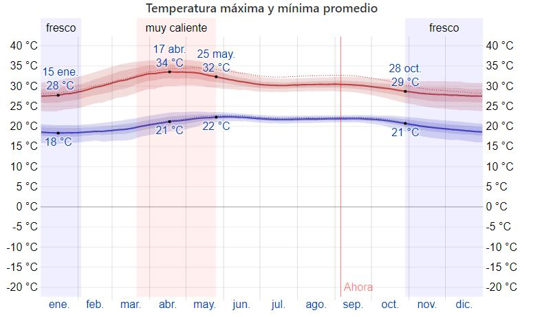

¡Conose los climas que contiene este gran departamento!

En Chiquimula, la temporada de lluvia es opresiva y nublada, la temporada seca es húmeda y mayormente despejada y es muy caliente durante todo el año. Durante el transcurso del año, la temperatura generalmente varía de 18 °C a 34 °C y rara vez baja a menos de 16 °C o sube a más de 37 °C. En base a la puntuación de turismo, la mejor época del año para visitar Chiquimula para actividades de tiempo caluroso es desde principios de diciembre hasta principios de marzo
La temporada calurosa dura 2.1 meses, del 21 de marzo al 25 de mayo, y la temperatura máxima promedio diaria es más de 32 °C. El día más caluroso del año es el 17 de abril, con una temperatura máxima promedio de 34 °C y una temperatura mínima promedio de 21 °C. La temporada fresca dura 3.1 meses, del 28 de octubre al 3 de febrero, y la temperatura máxima promedio diaria es menos de 29 °C. El día más frío del año es el 15 de enero, con una temperatura mínima promedio de 18 °C y máxima promedio de 28 °C.
